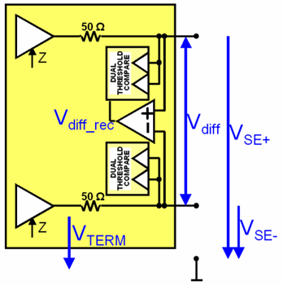

Pin Scale 5000 receiver
AC performance
| AC performance | |
|---|---|
| Intrinsic transition time 20% to 80% | 144 ps (typical) |
DC performance (single ended)
| DC performance (single ended) | ||
|---|---|---|
| Input voltage and threshold range at |VGS| ≤ 100 mV | -1.5 V to +6.5 V | |
| Threshold voltage resolution | 1 mV | |
| Threshold voltage accuracy at VGS = 0 mV | ± 5 mV | |
| Maximum input leakage current | High-Z | ± 2 µA |
| DCL off | ± 10 nA | |
DC performance (differential)
| DC performance (differential) | ||
|---|---|---|
| Input voltage range at |VGS| ≤ 100 mV | -1.5 V to +6.5 V | |
| Maximum differential input voltage | ± 8 V | |
| Differential threshold voltage range | -1.0 V to +1.0 V | |
| Threshold voltage resolution | 1 mV | |
| Threshold voltage accuracy | ± 5 mV | |
| Maximum input leakage current | High-Z | ± 2 µA |
| DCL off | ± 10 nA | |
Termination
| Termination | ||
|---|---|---|
| Single-ended impedance | -1.5 V ≤ VSE ≤ 3.0 V | 50 Ω ± 3 Ω |
| VSE > 3.0 V | 50 Ω (typical) | |
| Center tap differential impedance | -1.5 V ≤ VSE ≤ 3.0 V | 100 Ω ± 6 Ω |
| VSE > 3.0 V | 100 Ω (typical) | |
| Termination voltage range at |VGS| ≤ 100 mV | -1.5 V to +6.5 V | |
| Termination voltage resolution | 1 mV | |
| Termination voltage accuracy | ± 5 mV | |
VSE is the single-ended, resulting voltage at the pin line. See the figure below.

Functional changes
- Introduced in SmarTest 7.10.2